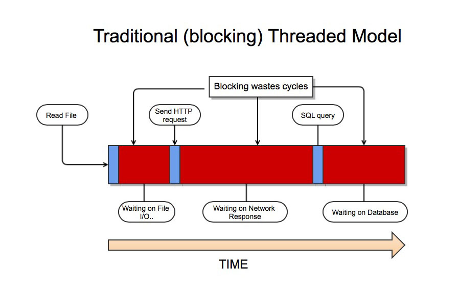
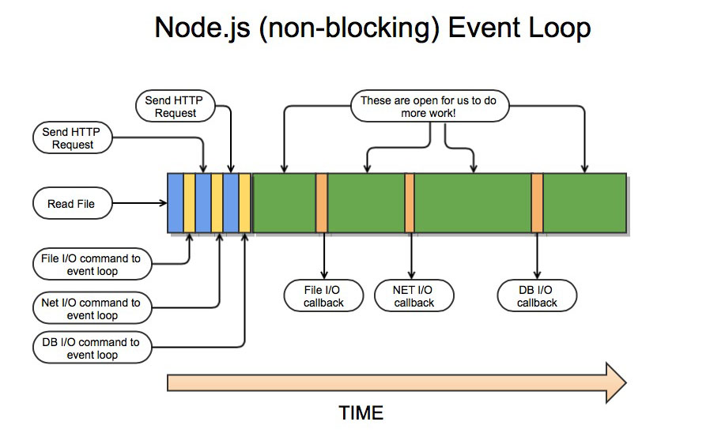
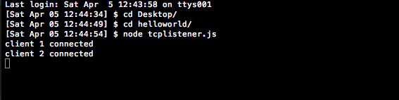
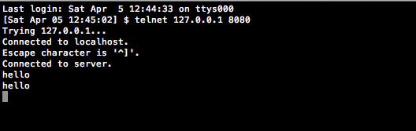
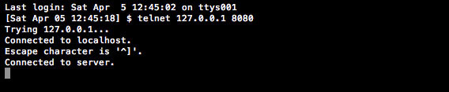
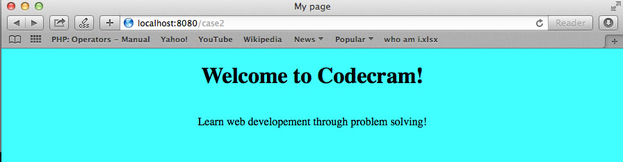
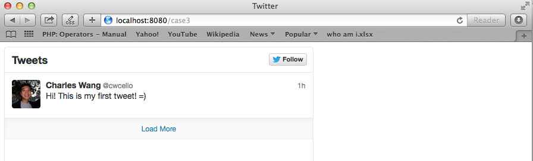

Describe the difference between the traditional threaded model versus the Node.js way

If all threads are in use,every incoming connection is blocked. This can cause a huge
traffic jam on high-throughput applications.

Node.js uses a single thread. Instead of performing I/O ourselves, we dispatch I/O events
to Node's event loop. It passes I/O requests to the event loop, along with callbacks.
Your code then goes to sleep, uses no system resources, will be notified via callback
when I/O is complete.
Problem #2
What are DIRTy applications?
DIRT is an acronym for Data-Intensive Real Time applications. These are the kinds of
applications node is designed for.
Problem #3
Node.js allows us to make use of command line inputs by providing us with their
'readline' module. Write a simple node.js app using their readline module as well as
the question method to ask for a user's name and print to the console "Hello + username".
You can find the Node.js modules here: Node.js modules
helloname.js
var r1=require("readline"); //require the readline module
var interface=r1.createInterface(process.stdin, process.stdout, null); //create a interface object
interface.question('What is your name? ', function(answer) {
console.log("Hello, "+ answer + " !");
//once we start the node.js server it will never terminate
//we can fix this by closing the open interface object and
//destroying the standard in process at the end of the callback.
interface.close();
process.stdin.destroy();
});
//To run the app, go to terminal and type: node helloname.js
Problem #4
Create a Transmission Control Protocol (TCP) listener in Node.js. In your app, echo the
user's reponse using the pipe method and also include a counter for every new client
connection. Make sure to log the client connection count to the console so you can see
it. Use telnet to connect to your server. For more info on TCP and Telnet click the
follwing links: TCP and Telnet
tcplistener.js
var net=require("net"); //require net module
var client_count=0; //count client connections.
var server = net.createServer(function (socket){//create server object
client_count++
console.log("client" + client_count+ "connected" )
//server definition
socket.write("Connected to server.\r\n" );//when a connection is made. We send the client
// a message over the open connection letting them
//know they are connected using the write command.
socket.pipe(socket)//we pipe any additional traffic over the specified port back to the client
//using the pipe method. This will cause the server to echo any message sent
//by the client right back.
//now we have to tell the server to start listening and what port and sever address
// to listen in on before we can run out app.
});
server.listen(8080, "127.0.0.1") //listen in on port 8080 on localhost.
Launch the server.

Pull up another terminal window and use telnet to connect to our server. This is our 1st
client. Also, you can see when we type in hello, it automatically pipes or echos back
hello. You should see "client 1 connected" in the launch window.

Pull up another terminal window and use telnet to connect to our server. This is our
second client.You should see "client 2 connected" in the launch window.

**With about ten lines of code we have a scalable multi-tenant server. Since Node.js is
built on the V8 javascript engine it is able to handle a lot of simultaneous connection
This is becasue node does not need to start a new thread for every connetion that
comes in which is very expensive. Instead, Node's single process event loop takes
control and execute each callback functions when needed. That means that every client
doesn't need a new thread and our code never blocks waiting for I/O or waiting for a
response. This saves a lot of processing power and removes the common bottleneck of I/O
problems making node scale quite well.
Problem #5
Create a webserver with Node.js. Do a switch case for three options. First case is to
say, "Horray!" when you have successfully connected to the server. Second is to display
a html page of your own design. Third is to display a twitter feed of your own choice.
server.js
var http = require('http'); //require the http module
var url = require('url');
var fs = require('fs');
var server;
server = http.createServer(function(request,response){ // declare http server object
//callback has inputs of request and reponse.
var path = url.parse(request.url).pathname; // pathname:The path section of the URL, that comes after
//the host and before the query, including the initial slash
//if present.
switch(path){
case '/case1':
response.writeHead(200, {'Content-Type':'text/plain'});//Sends a response header to the request. In this case, our
//code status code is 200.
response.write('Horray!\n'); //displays message on console
response.end(); //end response stream
case '/case2':
fs.readFile(__dirname + '/index.html', function(err, data){
if (err) return send404(response);
response.writeHead(200, {'Content-Type': 'text/html'})
response.write(data, 'utf8');
response.end();
});
case '/case3':
fs.readFile(__dirname + '/twitter.html', function(err,data){
if(err) return send404(response);
response.writeHead(200, {'Content-Type': 'text/html'})
response.write(data, 'utf8');
response.end();
});
break;
default: send404(response); //If the client request a route we don't know.
//we just want to display an error message.
}
});
send404 = function(response){ //error function
response.writeHead(404);
response.write('Error:404\n');//displays error message if user enters a path
// we don't know about.
response.end();
}
server.listen(8080); //listen on the 8080 port
index.html
<!DOCTYPE html>
<html>
<head> <title> My page</title>
</head>
<body style="background-color: #00FFFF;">
<center>
<h1> Welcome to Codecram! </h1>
<br>
Learn web developement through problem solving!
</center>
</body>
</html>
twitter.html
<html>
<head>
<title>Twitter</title>
</head>
<body>
<!-- got to https://twitter.com/settings/widgets. Click create new and copy the code into your html document. -->
<a class="twitter-timeline" href="https://twitter.com/cwcello" data-widget-
id="452868515020541952">Tweets by @cwcello</a>
<script>!function(d,s,id){var js,fjs=d.getElementsByTagName(s)[0],p=/^http:/.test(d.
location)?'http':'https';if(!d.getElementById(id)){js=d.createElement(s);js.id=id;js
src=p+"://platform.twitter.com/widgets.js";fjs.parentNode.insertBefore(js,fjs);}}
document,"script","twitter-wjs");</script>
</body>
</html>
Implementation
launch the server using node
Test your first case. It should say Horray!
Test your second case by going to your browser and typing in
http://localhost:8080/case2.

Test your third case by going to your browser and typing in
http://localhost:8080/case3.
